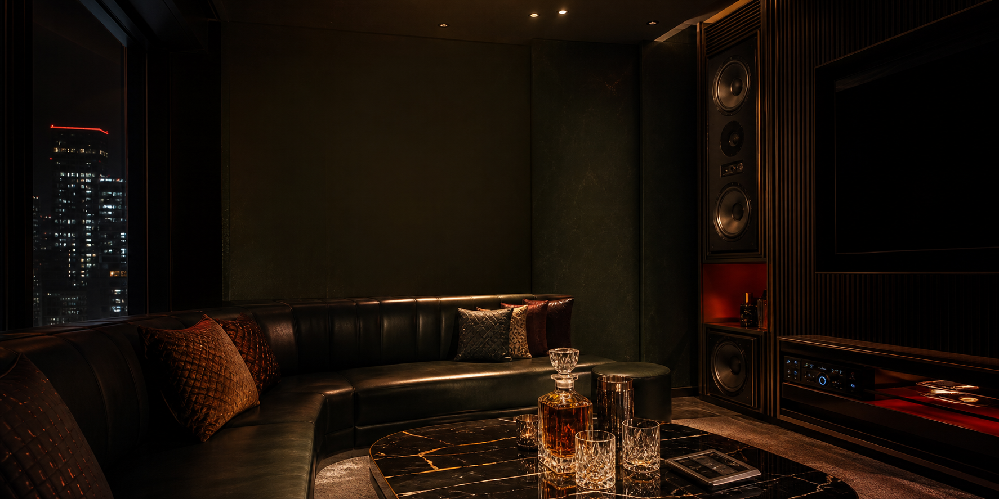

쩜오 도깨비 · 강남 예약 기준
쩜오 도깨비를 선택할 때 볼 것
위치, 라인업, 초이스, 결제 기준을 강남 도깨비 기준으로 확인하고 본인에게 맞는 자리인지 판단하실 수 있게 정리했습니다.
선택 기준
이름보다 중요한 것은 당일 운영 기준입니다.
쩜오 도깨비를 알아볼 때는 강남 쩜오 안에서 도깨비의 위치와 예약 기준이 본인 일정에 맞는지 보는 것이 중요합니다. 같은 강남권이라도 룸 상태, 라인업, 담당자 응대, 결제 안내 방식은 다를 수 있습니다.
도깨비는 역삼동 824-7 위치와 70명 넘는 라인업, 초이스 전 청구 없음이라는 기준을 먼저 안내합니다. 방문 전에는 이 기준이 원하는 자리 분위기와 맞는지 확인하는 것이 좋습니다.
문의 전 체크
쩜오 도깨비 문의 전 확인할 내용
- 방문 목적 강남 쩜오 안에서 도깨비의 위치, 라인업, 초이스 기준이 원하는 자리와 맞는지 봅니다.
- 운영 위치 도깨비는 서울 강남구 역삼동 824-7을 기준으로 방문 동선을 안내합니다.
- 초이스 기준 나이대, 분위기, 술자리 템포를 보고 맞는 분으로 선택할 수 있도록 안내합니다.
- 예약 기준 폼 접수 후 담당자가 가능 시간, 위치, 기본 결제 기준을 전화로 확인합니다.
결정 순서
기준을 정리한 뒤 문의하면 빠릅니다.
- 01 위치 확인 강남역과 역삼역 사이 동선이 맞는지 먼저 확인합니다.
- 02 인원 확인 함께 방문할 인원과 도착 예정일, 시간을 정리합니다.
- 03 문의 접수 선호 기준을 남기면 담당자가 당일 가능 여부를 안내합니다.
문의 전 질문
쩜오 도깨비 문의 전 자주 확인하는 내용
-
쩜오 도깨비에서는 무엇을 먼저 보면 되나요?
강남 쩜오 안에서 도깨비의 위치, 라인업 규모, 초이스 전 청구 기준을 먼저 보면 됩니다.
-
방문 전에 가격을 모두 알 수 있나요?
기본 결제 기준은 전화로 안내하며, 파트너 선택 후 2시간 T/C와 위스키 1병 비용을 확인합니다.
-
바로 방문할 수 있나요?
당일 라인업과 룸 상황이 달라질 수 있어 예약 폼 접수 후 가능 시간을 먼저 확인합니다.
쩜오 도깨비 기준이 맞다면
홈페이지 예약 폼에 도착 예정 시간, 인원, 연락처를 남겨주세요.